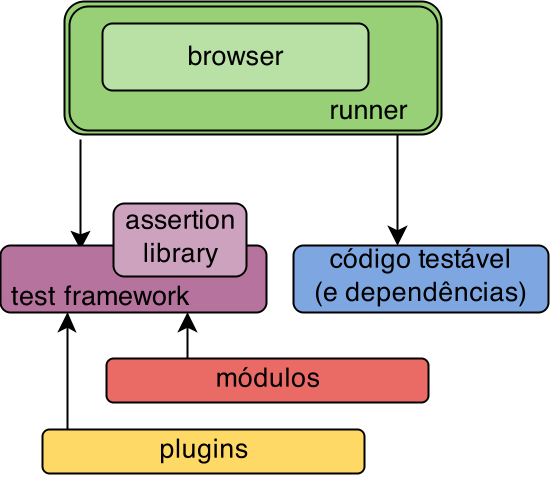
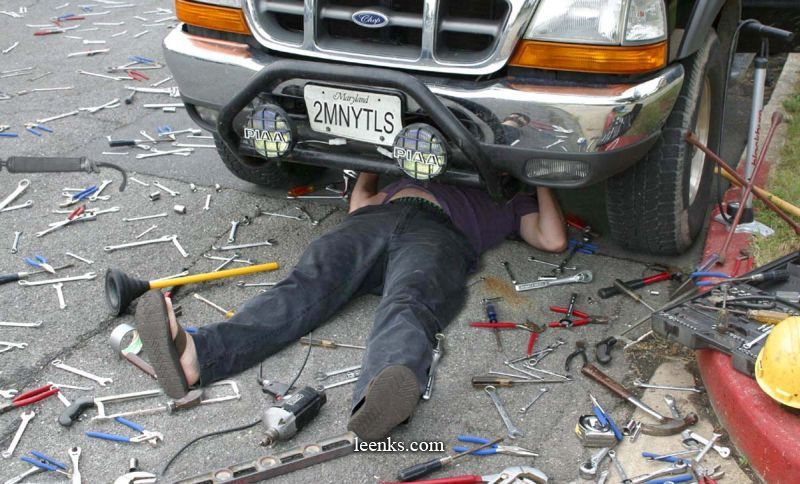
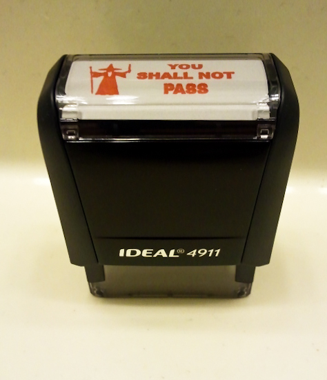
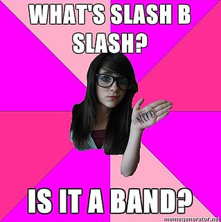
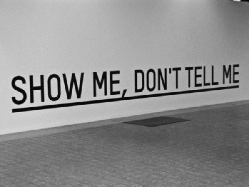
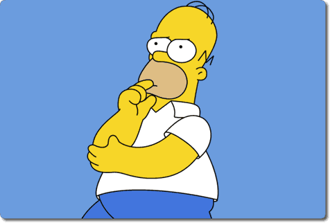

Talk-test-frameworks
Presentation about front-end tests frameworks given on Front In BH 2014
UI Test Frameworks
João Lucas & Rafael Guedes
Front In BH - 2014
Quem somos?
Não, não somos mais uma dupla sertaneja!
Quem somos?
-
João Lucas Santana ( @jlucasps )
- UI Engineer na Avenue Code
- Ruby e JavaScript developer
- Empreendedor por insistência
-
Rafael Guedes ( @rafaelmenta )
- UI Engineer na Avenue Code
- Desenvolvimento web desde 2007
- Testando em front-end desde 2013
Cenário
- Javascript mal estruturado
- JS e CSS misturados com HTML
- Péssima rastreabilidade, reusabilidade e manuntenabilidade
Resumindo:
CAOS
Melhoramos
- Separação do código
- Abstração de esturutras JS (e CSS)
- Frameworks!
Aplicações complexas
trazem problemas complexos
Como previni-los?
Testes!
Os testes no código client-side passam a ter a mesma importância em relação ao server-side
Sim. Isso também significa integrá-los ao processo de build.
Testes em front-end

Criando o primeiro teste
describe("My first test suite", function() {
beforeEach(function() {
// setup
});
afterEach(function() {
// cleanup
});
it('should fail', function() {
true.should.be.false;
});
});
Ferramentas de testes

Ferramentas de testes
- Matchers customizados, spies, async, clock
describe("Calculator", function() {
var calc;
beforeEach(function() {
calc = Calculator();
});
it('should sum two numbers', function() {
var result = calc.add(2, 3);
expect(result).toEqual(5);
});
});
Ferramentas de testes
- jQuery project
- Focado em testar Javascript no browser
var calc;
module('Awesome module', {
setup: function() {
calc = new Calc();
},
teardown: function() { }
});
test('sum', function( ) {
deepEqual(calc.sum(2, 4), 6, 'Description');
equal(calc.sum(2, 4), '6', 'Description');
} );
Ferramentas de testes
- Framework flexível e modular para node.js e browser
- Promise test,
before&afterhooks
describe("a promise test", function() {
before(function() { return db.save([mark, amir, zeo]); });
it('should give me correct user count with callback', function(done) {
db.find({ type: 'User'}).then(function(data, err) {
data.length.should.equal(3);
done();
});
});
it('should give me correct user count with promise', function() {
return db.find({ type: 'User' }).should.eventually.have.length(3);
});
});
Ferramentas de testes
- Framework flexível e modular para node.js e browser
- Integrado com Sinon.JS
buster.spec.expose();
describe("My thing", function () {
it("has the foo and bar", function () {
expect("foo").toEqual("bar");
});
it("states the obvious", function () {
expect(true).toBe(true);;
});
});
Como escolher meu framework?
- Estável
- Comunidade
- Compatível com tecnologias do projeto
- Modular
Ferramentas utilitárias

Spies
Spies
- Funções que informam sobre funções executadas
- Chamadas
- Argumentos
- Contexto
- Retorno
- Exceções
Stubs
Stubs
- Spy com comportamento pré-estabelecido
- ~Engana~ o fluxo do sistema
- Especialmente útil para código com dependências
Mocks

Mocks
- Métodos com comportamento pré-estabelecido
- Fazem seu código falhar se não forem executados corretamente
Fakes

Fakes
- Mais simples do que Mocks
- Interface de objetos reais
- Ex: Google Maps object
Mãos à massa

Cenário
Player de música
var player = new Player(), // Music player
song = new Song( 120 ), // single song
playList = [ // playlist
new Song( 112 ),
new Song( 145 ),
new Song( 88 )
];
player.play( song ); // play and quit
player.play( playList ); // play in sequence
Stack utlizada
- Karma
- Mocha
- Chai (should)
- Sinon.js
Configurando o Karma
npm install karma --save-dev
npm install -g karma-cli
# Plugins
npm install
> karma-mocha karma-chai karma-sinon karma-phantomjs-launcher
> --save-dev
karma init
karma start
karma.conf.js
module.exports = function(config) {
config.set({
// ...
frameworks: ['mocha', 'chai', 'sinon'],
files: [
'js/**/*.js',
'test/**/*.js'
],
// ...
Criando os primeiros testes
(de verdade)
Arquivo js/song.js
var Song = function( duration ) {
this.duration = duration; // In seconds
this.isPlaying = false;
};
Song.prototype.play = function() {
this.isPlaying = true; // Song is playing
};
Criando os primeiros testes
Arquivo test/song.js
describe, beforeEach e expect().to.be.true
describe('Song', function() {
var song;
beforeEach( function() {
song = new Song( 154 );
});
it('should be a function', function() {
Song.should.be.a("function");
});
it('should be playing after call play()', function() {
song.play();
expect(song.isPlaying).to.be.true;
});
});
Comportamento assíncrono
Arquivo test/song.js
Song.prototype.play = function() {
var self = this;
this.isPlaying = true; // Song is playing
this.timer = setTimeout( function() {
self.nextSong.call( self ); // Play next song
}, this.duration * 1000 ); // after X seconds
};
Song.prototype.nextSong = function( ) {
this.isPlaying = false; // Song isn't playing
clearTimeout( this.timer );
this.player.playNext(); // Play next song
};
Comportamento assíncrono
Como verificar que nextSong() será chamada?
Song.prototype.play = function() {
// ...
this.timer = setTimeout( function() {
self.nextSong.call( self ); // Async call
}, this.duration * 1000 );
};
Song.prototype.nextSong = function( ) {
// ...
this.player.playNext(); // Dependencies
};
Clock e stubs
Sinon.js para alterar o clock e utilizar stubs
var song;
beforeEach( function() {
song = new Song( 120 ); // 2 minutes
} );
it( 'should call nextSong after X seconds', function( ) {
var clock = sinon.useFakeTimers();
sinon.stub( Song.prototype, 'nextSong' ); // Song.prototype
song.play();
clock.tick( song.duration * 1000 );
expect( song.nextSong.calledOnce ).to.be.true; // object song
clock.restore();
} );
Spies
Classe js/player.js
var Player = function( ) {
this.currentSongIndex = -1;
};
Player.prototype.play = function( media ) {
if ( Array.isArray( media ) ) {
this.playList = media; // Save playlist
} else if ( media instanceof Song ) {
this.singleSong = media; // Save a single song
}
this.playNext(); // Start playing
};
Spies
Como verificar que return currentSong; está correto?
Player.prototype.playNext = function() {
var currentSong;
if ( /* single or playlist ? */ ) {
if ( this.singleSong ) {
// Save single song
} else if ( this.playList ) {
// Save from playlist
}
currentSong.play(); // Song will play
}
return currentSong; // Return song playing
};
Spies
Método playNext() da class Player
Player.prototype.playNext = function() {
var currentSong; // Song to play
if ( this.singleSong || this.playList) {
this.currentSongIndex += 1;
if ( this.singleSong && this.currentSongIndex === 0 ) {
currentSong = this.singleSong; // Play single song
} else if ( this.playList && this.currentSongIndex < this.playList.lenght ) {
currentSong = this.playList[this.currentSongIndex]; // From playlist
}
if ( currentSong instanceof Song ) {
currentSong.player = this;
currentSong.play(); // Song will play
}
}
return currentSong; // Song playing
};
Spies
Testes com spies: test/player.js
it( 'should play the only song and exit the player', function() {
var clock = sinon.useFakeTimers(),
player = new Player(), song = new Song( 120 ),
playNextSpy = sinon.spy( player, 'playNext' ),
playSpy = sinon.spy(song, 'play');
player.play( song );
clock.tick( song.duration * 1000 );
expect( song.play.calledOnce ).to.be.true;
expect( playNextSpy.calledTwice ).to.be.true;
expect( playNextSpy.returnValues[0] ).to.deep.equal( song );
expect( playNextSpy.returnValues[1] ).to.deep.equal( undefined );
playNextSpy.restore();
clock.restore();
});
Perguntas? Comentários?

UI Test Frameworks
describe( "AVENUE CODE", function() {
it( "IS HIRING!", function() {
expect( audience ).to.send( CV.pdf );
expect( myself ).to.win( iPod.SHUFFLE );
} );
} );
Muito Obrigado!
João Lucas ( @jlucasps ) & Rafael Guedes ( @rafaelmenta )
Front In BH - 2014